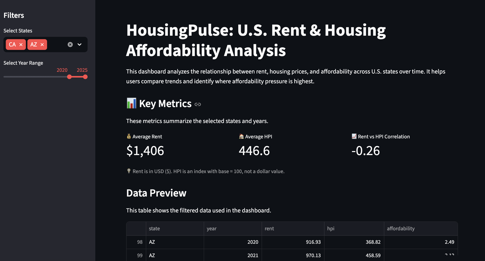
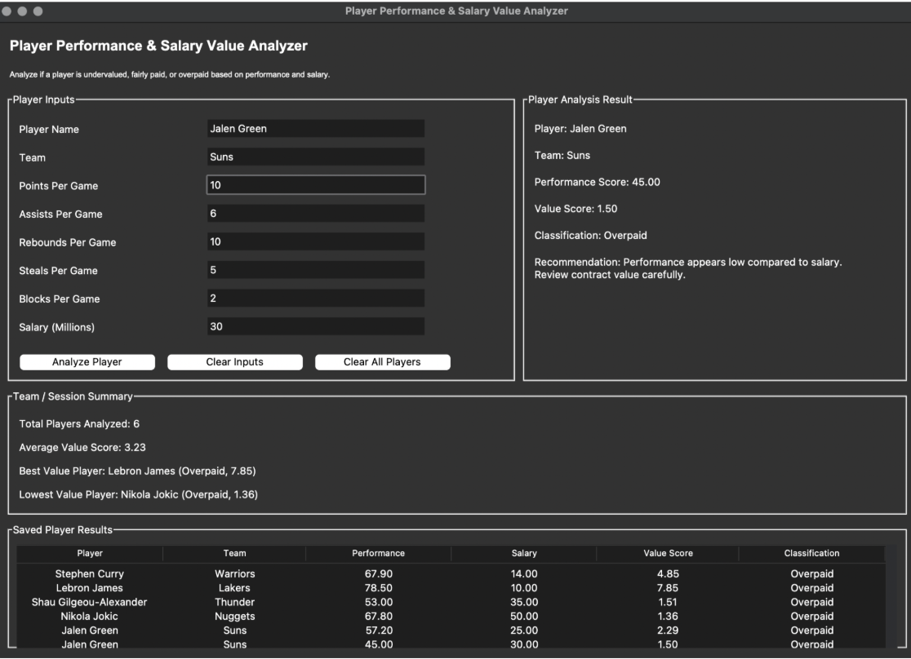

Monique
Favela
Business Administration graduate focused on Information Systems, analytics, operations, public administration, sports analytics, and community impact.
About Me
I recently graduated from California State University Monterey Bay with a degree in Business Administration and a concentration in Information Systems & Analytics.
My interests include data analytics, healthcare systems, operations, sports analytics, public administration, and using technology to improve systems that support my community.
I enjoy building dashboards, analyzing data, and creating projects using Python, Streamlit, R, SQL, and data visualization tools.

HousingPulse Dashboard
Interactive Streamlit dashboard analyzing U.S. housing affordability using HUD and FHFA data. Features affordability rankings, trend analysis, state comparisons, and visual analytics.

Player Performance & Salary Analyzer
Python-based analytics application with a Tkinter GUI that evaluates player statistics and salary data to identify undervalued or overpaid athletes.

Sentiment Analysis using R
Data analytics project using R to scrape and analyze sentiment from online text sources through text mining, sentiment scoring, and data visualization.